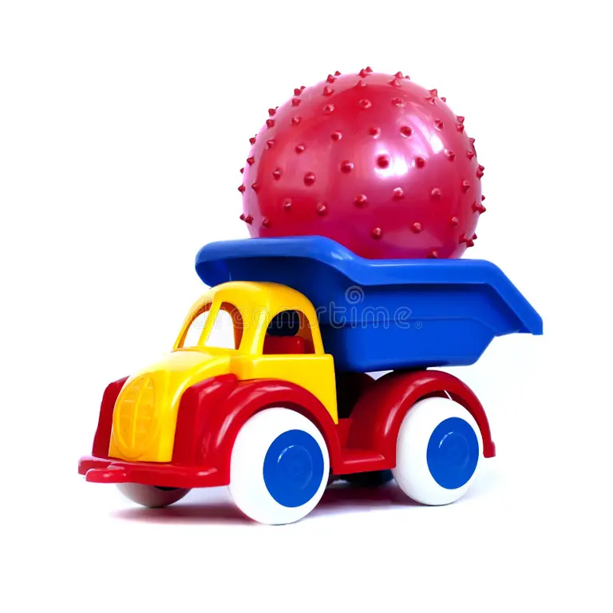

1. Pregătește experimentul
2. Formulează o predicție
Moneda este așezată pe carton, deasupra paharului. Cartonul va fi lovit rapid, pe direcție orizontală.
3. Realizează demonstrația
→
4. Explică rezultatul
Inerția este proprietatea corpurilor de a-și menține starea de repaus sau de mișcare rectilinie uniformă în absența unei acțiuni care să le schimbe această stare.
5. Aplică ideea într-o situație nouă

Un cărucior se deplasează, apoi se oprește brusc în fața unui obstacol. Un corp aflat pe cărucior tinde să: